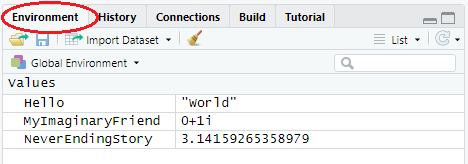

3 Objects and data types in R
3.1 How it works
You will now start with writing R code in the console and you will explore a first script of R code. Every line of code is interpreted and executed by R. Once R is done computing, the output of your R code will be shown in the console. In some cases, however, something might go wrong (e.g. due to an error in the code) and then you will either get a warning or an error. R makes use of the # sign to add comments, so that you and others can understand what the R code is about. Just like Twitter! Luckily, here your comments are not limited to 280 characters. When passing lines of code preceded by # to the R console, these will simply be ignored and hence, will not influence your results. [Quote from DataCamp’s ‘Introduction to R’ course.] In its most basic form, R can be used as a simple calculator. We illustrate the use of some arithmetic operators in the code below.
[1] 1363.2 Objects
A basic concept in (statistical) programming is called a variable and in R, this is commonly referred to as an object. An object allows you to store a value (e.g. 4) or a more complex data structure (e.g. a database). You can then later use this object’s name to easily access the value or the data structure that is stored within this object. [Quote from DataCamp’s ‘Introduction to R’ course.]
We create an object by giving it a name and using the assignment operator <- or -> to assign a value to this object (Douglas et al. 2020). The value gets stored into the object to which the arrow is pointing. You can then view the value of the object by passing it to the console and the value will then be given as output.
[1] 1[1] -1Can you guess what the output will be for the following code?
[1] 1Once we have created an object, we can easily perform some calculations with it.
[1] 5[1] 5.5[1] 1Further, = is an alternative assignment operator to <-, but is often discouraged for people new to R. The <- operator is considered to be more important by R and precedes = in importance (for a more detailed explanation see https://stackoverflow.com/questions/1741820/what-are-the-differences-between-and-assignment-operators-in-r). In most contexts, however, = can be used as a safe alternative (Venables, Smith, and R Core Team 2020). Just know that you should use it with care.
a <- b = 2 # throws an error, these 2 operators should not be mixed
mean(b = 5:10) # b is not an argument in this function and the object b is not created
mean(b <- 5:10) # here, b is created and then considered to be the argument of the function
bIn addition, the code above illustrates that, within functions, = is reserved to assign objects to the arguments.
3.3 Everything is an object
In R, an analysis is normally broken down into a series of steps. Intermediate results are stored in objects, with minimal output at each step (often none). Instead, the objects are further manipulated to obtain the information required. In fact, the fundamental design principle underlying R (and S) is “everything is an object”. Hence, not only vectors and matrices are objects that can be passed to and returned by functions, but also functions themselves, and even function calls. (Quote from ‘Applied Econometrics in R’, by Kleiber & Zeileis) A variable in R can take on any available data type, or hold any R object.
# see all objects stored in R's memory, where 'ls()' is for 'List Objects'
# and returns a vector of character strings
# giving the names of the objects in the specified environment
rm(list = ls()[!grepl("Object|Confused", ls(), perl = T)]) # Clean environment to have a short list
ls()[1] "HappyObject" "IAmConfused" "ObjectSize" "SadObject" [1] "HappyObject" "IAmConfused" "ObjectSize" a <- 1
b <- 2
c <- 3
d <- 4
rm(a, b)
rm(list = c('c', 'd'))
a <- 1
b <- 2
c <- 3
d <- 4
# with the following code, you will remove everything in your working directory
rm(list = ls())All objects that you create, are stored in your current workspace and in RStudio you can view the list of objects by clicking on the ‘Environment’ tab in the top right hand pane. This workspace is also referred to as the global environment and this is where all the interactive computations take place (i.e. outside of a function) (Wickham 2019).

Without going to much into the technical details, we can sort of compare your workspace with your own, special sandbox.
Everything that you create in your sandbox, stays there and gets saved in your .RData file when you close your session. When creating an Rstudio project, this RData gets automatically imported (with the default settings) when you open your project again and with this, your session gets ‘restored’ as it contains all objects you created last time. When creating a new project in a different directory, you create a new sandbox and this makes it easy to structure all of your different projects and analyses.
3.4 Basic data types
R works with numerous data types. Some of the most basic types to get started with are:
- Decimal values like 4.5 are called numerics.
- Natural numbers like 4 are called integers. Integers are also numerics.
- Boolean values (TRUE or FALSE) are called logical.
- Dates or
POSIXctfor time based variables. Here,Datestores just a date andPOSIXctstores a date and time. Both objects are actually represented as the number of days (Date) or seconds (POSIXct) since January 1, 1970. - Text (or string) values are called characters.
Note how the quotation marks on the right indicate that “some text” is a character.
my_numeric <- 42.5
my_character <- "some text"
my_logical <- TRUE
my_date <- as.Date("05/29/2018", "%m/%d/%Y")Note that the logical values TRUE and FALSE can also be abbreviated as T and F, respectively.
[1] TRUE[1] FALSEYou can check the data type of an object beforehand. You can do this with the class() function.
[1] "numeric"When you are interested if an object is of a certain type, you can use the following functions:
[1] TRUE[1] FALSE[1] TRUE[1] TRUEThis is incredibly useful when you have to check the input that’s passed to a self-written function and to prevent that objects of a wrong type get passed. In addition, as you might have noticed, there’s no function is.Date. No need to worry, however, because R’s flexibility allows us to create a function like this ourselves, but we’ll go over it more in detail in Chapter 8. For now, just know that you can alternatively use the function inherits or is
[1] TRUE[1] TRUE3.5 Vectors
Vectors are one-dimension arrays that can hold numeric data, character data, or logical data. In other words, a vector is a simple tool to store data. In R, you create a vector with the combine function c(). You place the vector elements separated by a comma between the parentheses. (Quote from DataCamp’s ‘Introduction to R course’) Vectors are key! Operations are applied to each element of the vector automatically, there is no need to loop through the vector.
Once we have created this vector, we can pass it to functions to gather some useful information about it.
In addition to the above functions, length is another function that’s incredibly useful and one of the functions you will use a lot. When passing a vector to this function, it returns the number of elements that it contains
[1] 4Often, we want to create a vector that’s a sequence of numbers. In this case, we can use the : symbol to create a sequence of values in steps of one (Douglas et al. 2020). Alternatively, we can use the function seq which allows for more flexibility.
[1] 1 2 3 4 5 6 7 8 9 10 [1] 1 2 3 4 5 6 7 8 9 10 [1] 0.0 0.5 1.0 1.5 2.0 2.5 3.0 3.5 4.0 4.5 5.0 5.5 6.0 6.5 7.0
[16] 7.5 8.0 8.5 9.0 9.5 10.0# or the length of the vector, and the steps will be computed by R
seq(from = 0, to = 10, length = 6)[1] 0 2 4 6 8 10When we need to repeat certain values, we can use the rep function.
[1] 1 1 1 1 1 [1] 1 2 3 4 5 1 2 3 4 5 1 2 3 4 5 1 2 3 4 5 1 2 3 4 5 [1] 1 1 2 2 3 3 4 4 5 53.5.1 Vector indexing
To access certain elements of a vector, we use the square brackets []. For example,
[1] 1[1] 5To select a subset of elements, we can specify an index vector (Venables, Smith, and R Core Team 2020) that specifies which elements should be selected and in which order.
[1] 2 4[1] 4 2The index vector can be of four different types (Venables, Smith, and R Core Team 2020):
- A logical vector.
[1] 1 3 4[1] FALSE FALSE FALSE TRUE TRUE[1] 4 5- A vector with positive indices, which specifies which elements should be selected.
[1] 1 2 3- A vector with negative indices, which specifies which elements should be excluded.
[1] 4 5- A vector of character strings, in case of a named vector. This is then similar to the index vector with positive indices, but now we select the items based on their names. This will be particularly useful later on, when we are working with data frames.
Squirtle Bulbasaur Charmander
1 2 3 Squirtle
1 Charmander
3 Next to selecting elements, we can also use this to perform an operation on these elements only.
Squirtle Bulbasaur Charmander
25 2 3 3.5.2 Character and logical vectors
A vector can either hold numeric, character or logical values.
[1] "Katrien" "Jan" "Leen" [1] "Jan" chr [1:3] "Katrien" "Jan" "Leen"[1] "character"In addition, you can give a name to the elements of a vector with the names() function. Here is how it works
Name Profession
"Katrien Antonio" "teacher" Important to remember is that a vector can only hold elements of the same type. Consequently, when you specify elements of different types in a vector, it saves it to that type that contains the most information (logical < numeric < character).
[1] 0 1[1] "0" "Character"3.5.3 Missing values
When working with real-life data, you are confronted with missing data more often than you’d care to admit. The values are indicated by NA and any operation on this value will remain NA. To assess which elements are missing in a vector, you can use the function is.na.
[1] 1 2 NA 4 5[1] FALSE FALSE TRUE FALSE FALSEAs it returns a logical vector, we can use it as an index vector.
[1] NA3.5.4 Logical operators
We are able to create logical expressions using the logical operators <, <=, >, >=, ==, where the last one is reserved exact equality. This enables us to select subset of elements. Further, we can combine logical expressions using & or | to denote their intersection or union, respectively.
[1] FALSE FALSE FALSE TRUE TRUE[1] FALSE FALSE TRUE FALSE FALSE[1] 3[1] 3 5To get the negation of a logical expression, we make use of the ! operator.
[1] FALSE[1] TRUE[1] FALSE TRUE FALSE FALSEThis ! operator can then be used for a whole range of useful manipulations. Going back to the vector with missing values, we can use this to exclude the missing values in the vector.
[1] 1 2 4 5[1] 1 2 4 5
attr(,"na.action")
[1] 3
attr(,"class")
[1] "omit"The above also illustrates that we can combine multiple statements or manipulations in one line of code. Combining them gives us a very powerful tool to handle and analyze data in an efficient way.
[1] 33.5.5 Factors
To specify that you have a vector with a discrete classification, we make use of a factor object which can either be ordered or unordered. These are mainly used in formulae, but we will already introduce the basics here.
Fruits <- c("Apple", "Banana", "Grape", "Lemons")
Fruits <- factor(Fruits)
Var <- rep(1:4, each = 2)
Var <- factor(Var, levels = 1:4, labels = c("Apple", "Banana", "Grape", "Lemons"))
Var[1] Apple Apple Banana Banana Grape Grape Lemons Lemons
Levels: Apple Banana Grape Lemons[1] "Apple" "Banana" "Grape" "Lemons"[1] 4Be careful, however, when converting factor variables to numeric. The factor variables have an underlying numeric value assigned to them and you should therefore always be careful when converting them.
[1] 1 1 2 2 3 3 4 4[1] 3 5 29 5
Levels: 29 3 5[1] 2 3 1 33.6 Matrices
In R, a matrix is a collection of elements of the same data type (numeric, character, or logical) arranged into a fixed number of rows and columns. Since you are only working with rows and columns, a matrix is called two-dimensional. You can construct a matrix in R with the matrix() function. (Quote from DataCamp’s ‘Introduction to R course’)
[,1] [,2] [,3] [,4]
[1,] 1 2 3 4
[2,] 5 6 7 8
[3,] 9 10 11 12 [,1] [,2] [,3] [,4]
[1,] 1 2 3 4
[2,] 5 6 7 8
[3,] 9 10 11 12starting httpd help server ... doneIn addition to the function matrix, we can also create matrices by combining vectors through use of the cbind and rbind functions.
[,1] [,2]
[1,] 1 6
[2,] 2 7
[3,] 1 8
[4,] 2 9 [,1] [,2] [,3]
[1,] 1 2 3
[2,] -1 -2 -3 a b
[1,] "1" "a"
[2,] "2" "b"
[3,] "3" "c" [,1] [,2] [,3]
a "1" "2" "3"
b "a" "b" "c" 3.6.1 Matrix operations and indexing
Matrices and their theory are an essential part of linear algebra and R therefore has a lot of functions specifically designed for matrices.
[,1] [,2] [,3] [,4]
[1,] 1 4 7 10
[2,] 2 5 8 11
[3,] 3 6 9 12[1] 3[1] 4[1] 3 4 [,1] [,2] [,3]
[1,] 1 2 3
[2,] 4 5 6
[3,] 7 8 9
[4,] 10 11 12, , 1, 1
[,1] [,2]
[1,] 1 3
[2,] 2 4
, , 2, 1
[,1] [,2]
[1,] 2 6
[2,] 4 8
, , 1, 2
[,1] [,2]
[1,] 3 9
[2,] 6 12
, , 2, 2
[,1] [,2]
[1,] 4 12
[2,] 8 16, , 1, 1
[,1] [,2]
[1,] 1 3
[2,] 2 4
, , 2, 1
[,1] [,2]
[1,] 2 6
[2,] 4 8
, , 1, 2
[,1] [,2]
[1,] 3 9
[2,] 6 12
, , 2, 2
[,1] [,2]
[1,] 4 12
[2,] 8 16[1] 1 4[1] -2eigen() decomposition
$values
[1] 5.3723 -0.3723
$vectors
[,1] [,2]
[1,] -0.5658 -0.9094
[2,] -0.8246 0.4160An important difference with other statistical software programs, is that * is used for element-wise multiplication. When you want to multiply matrices, you should use the %*% operator.
[,1] [,2]
[1,] 1 9
[2,] 4 16 [,1] [,2]
[1,] 5 11
[2,] 11 25 [,1] [,2]
[1,] 5 11
[2,] 11 25 [,1] [,2]
[1,] 10 14
[2,] 14 20 [,1] [,2]
[1,] 10 14
[2,] 14 20Further, to get the inverse of a matrix, we use the solve function.
[,1] [,2]
[1,] -2 1.5
[2,] 1 -0.5To select a subset of elements of a matrix, we again use vector indices within the square brackets []. When we only want to select certain rows, columns or both, we put a comma in the square brackets.
x[1:5] # select first 5 elements, starts from 1st element from the 1st column and proceeds to the next elements in the 1st column[1] 1 2 3 4 NA[1] 1 3[1] 1 2[1] 43.7 Lists
A list in R allows you to gather a variety of objects under one object in an ordered way. These objects can be matrices, vectors, data frames, even other lists, etc. It is not even required that these objects are related to each other in any way. You could say that a list is some kind super data type: you can store practically any piece of information in it! (Quote from DataCamp’s ‘Introduction to R course’)
# a first example of a list
L <- list(one = 1, two = c(1, 2), five = seq(1, 4, length=5),
six = c("Katrien", "Jan"))
names(L)[1] "one" "two" "five" "six" Length Class Mode
one 1 -none- numeric
two 2 -none- numeric
five 5 -none- numeric
six 2 -none- character[1] "list"List of 4
$ one : num 1
$ two : num [1:2] 1 2
$ five: num [1:5] 1 1.75 2.5 3.25 4
$ six : chr [1:2] "Katrien" "Jan"# list within a list
# a list containing: a sample from a N(0,1), plus some markup
# list within list
mylist <- list(sample = rnorm(5), family = "normal distribution", parameters = list(mean = 0, sd = 1))
mylist$sample
[1] 0.0001814 -0.6873159 -0.6844453 0.2392138 1.6020159
$family
[1] "normal distribution"
$parameters
$parameters$mean
[1] 0
$parameters$sd
[1] 1List of 3
$ sample : num [1:5] 0.000181 -0.687316 -0.684445 0.239214 1.602016
$ family : chr "normal distribution"
$ parameters:List of 2
..$ mean: num 0
..$ sd : num 1The objects stored on the list are known as its components (Venables, Smith, and R Core Team 2020) and to access these components, we either use a numerical value indicating the position in the list or the name of the component (only possible when it has been given a name of course).
[1] 0.0001814 -0.6873159 -0.6844453 0.2392138 1.6020159[1] 0.0001814 -0.6873159 -0.6844453 0.2392138 1.6020159If the components have names, we can also access them using the $ operator in the following way.
[1] 0.0001814 -0.6873159 -0.6844453 0.2392138 1.6020159$mean
[1] 0
$sd
[1] 1[1] 0Moreover, we can even access the elements of the component in the same way as we did before.
[1] -0.6873 -0.6844 0.2392To access lists within lists, we use the following code
Dream = list(WithinADream = list(WithinAnotherDream = "DieTraumdeutung"))
Dream$WithinADream$WithinAnotherDream[1] "DieTraumdeutung"[1] "DieTraumdeutung"We use double square brackets to get the component in its original form. If we just use single brackets, we get it as an object of class list.
[1] "character"[1] "list"3.8 Data frames
Most data sets you will be working with will be stored as data frames. A data frame has the variables of a data set as columns and the observations as rows. This will be a familiar concept for those coming from different statistical software packages such as SAS or SPSS.
First, you will look at a ‘classic’ data set from the datasets package that comes with the base R installation. The mtcars (Motor Trend Car Road Tests) data was extracted from the 1974 Motor Trend US magazine, and comprises fuel consumption and 10 aspects of automobile design and performance for 32 automobiles (1973-74 models). (Quote from DataCamp’s ‘Introduction to R course’)
'data.frame': 32 obs. of 11 variables:
$ mpg : num 21 21 22.8 21.4 18.7 18.1 14.3 24.4 22.8 19.2 ...
$ cyl : num 6 6 4 6 8 6 8 4 4 6 ...
$ disp: num 160 160 108 258 360 ...
$ hp : num 110 110 93 110 175 105 245 62 95 123 ...
$ drat: num 3.9 3.9 3.85 3.08 3.15 2.76 3.21 3.69 3.92 3.92 ...
$ wt : num 2.62 2.88 2.32 3.21 3.44 ...
$ qsec: num 16.5 17 18.6 19.4 17 ...
$ vs : num 0 0 1 1 0 1 0 1 1 1 ...
$ am : num 1 1 1 0 0 0 0 0 0 0 ...
$ gear: num 4 4 4 3 3 3 3 4 4 4 ...
$ carb: num 4 4 1 1 2 1 4 2 2 4 ... mpg cyl disp hp drat wt qsec vs am gear carb
Mazda RX4 21.0 6 160 110 3.90 2.620 16.46 0 1 4 4
Mazda RX4 Wag 21.0 6 160 110 3.90 2.875 17.02 0 1 4 4
Datsun 710 22.8 4 108 93 3.85 2.320 18.61 1 1 4 1
Hornet 4 Drive 21.4 6 258 110 3.08 3.215 19.44 1 0 3 1
Hornet Sportabout 18.7 8 360 175 3.15 3.440 17.02 0 0 3 2
Valiant 18.1 6 225 105 2.76 3.460 20.22 1 0 3 1 mpg cyl disp hp drat wt qsec vs am gear carb
Porsche 914-2 26.0 4 120.3 91 4.43 2.140 16.7 0 1 5 2
Lotus Europa 30.4 4 95.1 113 3.77 1.513 16.9 1 1 5 2
Ford Pantera L 15.8 8 351.0 264 4.22 3.170 14.5 0 1 5 4
Ferrari Dino 19.7 6 145.0 175 3.62 2.770 15.5 0 1 5 6
Maserati Bora 15.0 8 301.0 335 3.54 3.570 14.6 0 1 5 8
Volvo 142E 21.4 4 121.0 109 4.11 2.780 18.6 1 1 4 2Since using built-in data sets is not even half the fun of creating your own data sets, you will now work with your own personally created data set. (Quote from DataCamp’s ‘Introduction to R course’)
Df <- data.frame(x = c(11, 12, 7), y = c(19, 20, 21), z = c(10, 9, 7))
# quick scan of the object 't'
summary(Df) x y z
Min. : 7.0 Min. :19.0 Min. : 7.00
1st Qu.: 9.0 1st Qu.:19.5 1st Qu.: 8.00
Median :11.0 Median :20.0 Median : 9.00
Mean :10.0 Mean :20.0 Mean : 8.67
3rd Qu.:11.5 3rd Qu.:20.5 3rd Qu.: 9.50
Max. :12.0 Max. :21.0 Max. :10.00 'data.frame': 3 obs. of 3 variables:
$ x: num 11 12 7
$ y: num 19 20 21
$ z: num 10 9 7# another way to create the same data frame
x <- c(11, 12, 7)
y <- c(19, 20, 21)
z <- c(10, 9, 7)
Df <- data.frame(x, y, z)Accessing elements in a data frame is similar to how we access elements in a matrix. We can again use an index vector to access either the rows, columns or both. In addition, similar to lists, we can access columns using the $ operator or using the double square brackets.
x y z
1 11 19 10
2 12 20 9 y z
1 19 10
2 20 9
3 21 7[1] 11 12 7[1] 11 12 7[1] 11 12 7In essence, a data frame can be seen as a combination of a list and a matrix. The variables are its components and the object has a separate class "data.frame" (Venables, Smith, and R Core Team 2020).
[1] TRUE[1] "data.frame"But that’s enough technical stuff for now, let’s do our first data exploration and calculate the mean of the variable z in data frame t!
[1] 8.667[1] 8.667The code mean(z) doesn’t work, because z wasn’t defined in the global environment but only within your data frame. Going back to the sandbox analogy, you can look at the data frame as a mini-sandbox within your bigger sandbox. Everything that gets defined in this sandbox, stays there. This way, we keep our sandbox nice and organized. Just imagine the mess when all of your variables of your data frame would just float around in your sandbox.
One ‘dirty’ way to access the variables in your data frame without specifying the said data frame, is to use the attach function. With this function, we tell R that it also has to search within the attached data frame.
[1] 8.667Using attach, however, can be dangerous. If you created an object with a similar name to a variable in your data frame, R will not use the variable in your data frame but the one that was created before.
The following objects are masked _by_ .GlobalEnv:
x, z[1] 0.03432[1] 10Warning in mean.default(z): argument is not numeric or logical: returning NA[1] NAOne way to avoid this, is to use the function with.
[1] 8.667More on data frames
# this does not work
# Df <- data.frame(x = c(11,12), y = c(19,20,21), z = c(10,9,7))
# but you _can_ do
Df <- data.frame(x = c(11, 12, NA), y = c(19, 20, 21), z = c(10, 9, 7))
# data frame with different types of information
b <- data.frame(x = c(11, 12, NA), y = c("me", "you", "everyone"))
str(b)'data.frame': 3 obs. of 2 variables:
$ x: num 11 12 NA
$ y: chr "me" "you" "everyone"In previous versions of R, character variables in a data frame were automatically converted to factor variables. They were briefly mentioned before and in essence, factor variables are used to store categorical variables (i.e. nominal, ordinal or dichotomous variables). Categorical variables can only take on a limited number of values. Conversely, continuous variables can take on an uncountable set of values. If you want to R to convert the variables with character strings to factor variables when creating a data frame, just specify stringsAsFactors = TRUE.
'data.frame': 3 obs. of 2 variables:
$ x: num 11 12 NA
$ y: Factor w/ 3 levels "everyone","me",..: 2 3 13.9 Exercises
Learning check
- Explore the objects and data types in R.
- Create a vector
fav_musicwith the names of your favorite artists. - Create a vector
num_recordswith the number of records you have in your collection of each of those artists. - Create vector
num_concertswith the number of times you attended a concert of these artists. - Put everything together in a data frame, assign the name
my_musicto this data frame and change the labels of the information stored in the columns toartist,recordsandconcerts. - Extract the variable
num_recordsfrom the data framemy_music. Calculate the total number of records in your collection (for the defined set of artists). Check the structure of the data frame, ask for a summary.